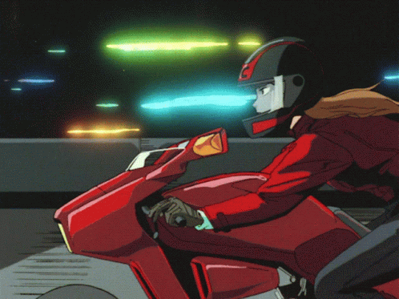

Bubblegum Crisis

An absolute time capsule, Bubblegum Crisis is the exact opposite of timeless. Everything about it, from the environments to the music screams 80s, and that just rocks. Seriously, BGC is a blast and IMO the pinnacle of the 80s OVA boom, in no small part thanks to fantastic character designs by Kenichi Sonoda, sick cyberpunk action, and really enjoyable characters. Who can say no to a group of girls in power armor fighting an evil mega corp and robots called BOOMERS??? Unfortunately, legal conflicts meant that only 8 of the originally planned 13 episodes were ever produced, and while the show did eventually get a sequel, as well as a handful of spin offs and even a reboot, I don't think any of them stand up to the original. Today the series is mostly forgotten, but back in its prime, BGC was actually pretty popular, especially amongst western fans, where, in the mid 90s it boasted solid VHS sales and had the largest Usenet group dedicated to a singular anime. And while it has certainly fallen from popularity, it still remains a solid and surprisingly influential piece of cyberpunk fiction. Also Priss is a queer icon, if you disagree I will destroy you.
Sound! Euphonium
 And now for something completely different :3 Eupho is an absolutely beautiful and emotional slice of life series by KyoAni about a girl entering high school, trying to find both her place in the world and in her high school concert band. It's incredibly well animated, full of really well done subtle characterization, and carries itself with an almost dreamlike quality. It's also a show very important to me. You see, when I first started watching, I was in school, playing euphonium in my school band. It really felt like the show was made for me. I was and still am very attached to the characters. Asuka, Kumiko,,, I really related so much to every second of this show. And it really did inspire me to put my heart into playing Euphonium in school! Now there is one glaring issue with the show,,, the yuri-bait. Yeah, it's rough, I can still hear the cries of /u/ even years later. The 1st season spends so much time setting up Kumiko and Reina,,, ONLY TO GO ABSOLUTELY NOWHERE AND HAVE REINA BE IN LOVE WITH THE BAND TEACHER??? AGHHHH (Yes, I know the source material is very much not yuri but I don't care). Despite this grievous flaw I still love the show though. It's really good and close to my heart.
And now for something completely different :3 Eupho is an absolutely beautiful and emotional slice of life series by KyoAni about a girl entering high school, trying to find both her place in the world and in her high school concert band. It's incredibly well animated, full of really well done subtle characterization, and carries itself with an almost dreamlike quality. It's also a show very important to me. You see, when I first started watching, I was in school, playing euphonium in my school band. It really felt like the show was made for me. I was and still am very attached to the characters. Asuka, Kumiko,,, I really related so much to every second of this show. And it really did inspire me to put my heart into playing Euphonium in school! Now there is one glaring issue with the show,,, the yuri-bait. Yeah, it's rough, I can still hear the cries of /u/ even years later. The 1st season spends so much time setting up Kumiko and Reina,,, ONLY TO GO ABSOLUTELY NOWHERE AND HAVE REINA BE IN LOVE WITH THE BAND TEACHER??? AGHHHH (Yes, I know the source material is very much not yuri but I don't care). Despite this grievous flaw I still love the show though. It's really good and close to my heart.
Berserk (1997)
 Yup it's the only good anime adaptation of Berserk! (jk I actually think the Golden Age movies are alright, I seem to like them more than most people I've talked to tbh) Everything that can be said about Berserk has already been said but oh well. Equal parts Fist of the North Star and Rose of Versailles, it's a gut wrenching yet beautiful story of broken people, revenge, and moving on, and has some of the most incredible panels ever drawn. It's one of the most popular and critically acclaimed manga of all time for a reason. Like many people, this adaptation was my introduction to that world and oh boy what an introduction it was. I'll probably get crucified for this take, but, I think I actually like this version of the Golden Age arc more than the manga, mostly due to the way it just,,, ends,,, Despite the stiff animation, it's still great. The Rose of Versailles shoujo influence somehow meshes so well with the gory, dark fantasy world. The characters all feel so alive and real, Griffith especially is just so interesting and enigmatic. The music is on point and the voice performances too! Especially the dub, it's really something else, one of those few shows I always watch in English. The show, like its source material, is a real masterpiece, but not at all for the faint of heart. If you can't handle gore or rape, do NOT watch this, but if you can stomach that stuff, you're in for something really life-changing.
Yup it's the only good anime adaptation of Berserk! (jk I actually think the Golden Age movies are alright, I seem to like them more than most people I've talked to tbh) Everything that can be said about Berserk has already been said but oh well. Equal parts Fist of the North Star and Rose of Versailles, it's a gut wrenching yet beautiful story of broken people, revenge, and moving on, and has some of the most incredible panels ever drawn. It's one of the most popular and critically acclaimed manga of all time for a reason. Like many people, this adaptation was my introduction to that world and oh boy what an introduction it was. I'll probably get crucified for this take, but, I think I actually like this version of the Golden Age arc more than the manga, mostly due to the way it just,,, ends,,, Despite the stiff animation, it's still great. The Rose of Versailles shoujo influence somehow meshes so well with the gory, dark fantasy world. The characters all feel so alive and real, Griffith especially is just so interesting and enigmatic. The music is on point and the voice performances too! Especially the dub, it's really something else, one of those few shows I always watch in English. The show, like its source material, is a real masterpiece, but not at all for the faint of heart. If you can't handle gore or rape, do NOT watch this, but if you can stomach that stuff, you're in for something really life-changing.
Revolutionary Girl Utena
 A queer shoujo classic, Revolutionary Girl Utena is,,, dare I say,,, revolutionary,,, Hailing from the same year as Berserk, it's yet another classic from the year 1997, which is honestly my favorite year for anime in general. The show is fantastical, chock full of surreal imagery and so much of it is laden with such heavy symbolism that it can be incredibly hard to decipher. Heavy is a good way to describe Utena in general actually. And that's why I love it, of course I also love it because it's queer as heck and is pretty much the definitive sapphic anime, but the dense symbolism is what I'm really here for. And it makes me so happy to see many shows even today, taking tons of influence from it. From Revue Starlight to even the most recent Gundam series of all things, Utena's influence stretches far and wide. What makes this all the more impressive is the shoestring of a budget the show was produced on. And yeah, it shows in the animation, but the expressive and unique character designs make the animation reuse and occasional lower quality not much of a problem at all. It deals with so many topics like heteronormativity, unjust hierarchical and family structures, gender roles, and so much more, most with near unmatched subtlety and grace. Watching Utena interact with the show's cast of strange dream-like characters is endlessly fascinating. It lends itself to countless interpretations and hours of analysis just to scratch the surface of this fairytail stage play and if that's not your cup of tea, then you probably won't like it, but it's definitely mine.
A queer shoujo classic, Revolutionary Girl Utena is,,, dare I say,,, revolutionary,,, Hailing from the same year as Berserk, it's yet another classic from the year 1997, which is honestly my favorite year for anime in general. The show is fantastical, chock full of surreal imagery and so much of it is laden with such heavy symbolism that it can be incredibly hard to decipher. Heavy is a good way to describe Utena in general actually. And that's why I love it, of course I also love it because it's queer as heck and is pretty much the definitive sapphic anime, but the dense symbolism is what I'm really here for. And it makes me so happy to see many shows even today, taking tons of influence from it. From Revue Starlight to even the most recent Gundam series of all things, Utena's influence stretches far and wide. What makes this all the more impressive is the shoestring of a budget the show was produced on. And yeah, it shows in the animation, but the expressive and unique character designs make the animation reuse and occasional lower quality not much of a problem at all. It deals with so many topics like heteronormativity, unjust hierarchical and family structures, gender roles, and so much more, most with near unmatched subtlety and grace. Watching Utena interact with the show's cast of strange dream-like characters is endlessly fascinating. It lends itself to countless interpretations and hours of analysis just to scratch the surface of this fairytail stage play and if that's not your cup of tea, then you probably won't like it, but it's definitely mine.
Serial Experiments Lain
 What a unique series. And I mean it, Lain really is something truly unique, and also very much a product of its time. It's a show that deals heavily with the technological advancement - particularly the expansion of the internet occurring at the end of the 20th century. The insecurities and fears surrounding it and the potential of it in equal measure. The story of a young school girls descent into the net. Is it a cautionary tale? One of evolution and trascendence? The heralding of 300a new digital age? Is this all just a product of poor Lain's imagination? Who knows. The lines of truth and fiction have blurred to the point where you have to ask, does it matter? Lain is a deeply cryptic and philosophical series. Answers are hard to come by and nothing is definitive. Speculate and theorize to your heart's content! As a somewhat early pioneer of digital animation, Lain features washed out colors and harsh whites that honestly really work in its favor - It's haunting. That turn of the century technological aesthetic is also really something to behold. The flashing lights of computers, the dim blue glow of screens, it's all so,,, mesmerizing and beautiful. It's no wonder why Lain gifs are posted everywhere these days. Even today the show is relevant - perhaps even more so than back when it was created. As the lines between digital and physical continues to blur, will it become even more relevant? Also, it's full of little nods to nerdy tech stuff - I love it, I bet the writers thought they were so sick when they named the main OS after Apple's Copland project lol.
What a unique series. And I mean it, Lain really is something truly unique, and also very much a product of its time. It's a show that deals heavily with the technological advancement - particularly the expansion of the internet occurring at the end of the 20th century. The insecurities and fears surrounding it and the potential of it in equal measure. The story of a young school girls descent into the net. Is it a cautionary tale? One of evolution and trascendence? The heralding of 300a new digital age? Is this all just a product of poor Lain's imagination? Who knows. The lines of truth and fiction have blurred to the point where you have to ask, does it matter? Lain is a deeply cryptic and philosophical series. Answers are hard to come by and nothing is definitive. Speculate and theorize to your heart's content! As a somewhat early pioneer of digital animation, Lain features washed out colors and harsh whites that honestly really work in its favor - It's haunting. That turn of the century technological aesthetic is also really something to behold. The flashing lights of computers, the dim blue glow of screens, it's all so,,, mesmerizing and beautiful. It's no wonder why Lain gifs are posted everywhere these days. Even today the show is relevant - perhaps even more so than back when it was created. As the lines between digital and physical continues to blur, will it become even more relevant? Also, it's full of little nods to nerdy tech stuff - I love it, I bet the writers thought they were so sick when they named the main OS after Apple's Copland project lol.
Revue Starlight
 Somewhat cryptic, flowery, and allegorical, Revue Starlight is a strange and delightful series that takes heavy influence from the previously mentioned Revolutionary Girl Utena, especially aesthetically. What starts as a seemingly normal show about a group of girls at a theater school quickly shifts into a surreal audition of combat and music, mediated by a talking giraffe of all things - the dreamlike quality of Utena is also certainly alive and well here. As these girls continue fighting each other in increasingly elaborate stage environments, in an attempt to become the "top star", it becomes apparent that this series is really about growing up and moving on. A coming of age story wrapped up in the aesthetic of a fantastical stage play. Of course I can't forget to mention the queer and sapphic elements of RevStar as well. Both it and Utena are considered "lesbian swordfight anime" and for good reason. Many of the girls pitted against each other clearly have some kind of feelings for each other. Most fights are tinged with these feelings and it becomes hard to ignore. Simply put, I love it. But even outside of the those sapphic undertones, the characters are all incredibly well written and enjoyable - Nana especially. The characters, their relationships with each other, and how driven they are to reach their goals are what makes this show. And it really is something to behold.
Somewhat cryptic, flowery, and allegorical, Revue Starlight is a strange and delightful series that takes heavy influence from the previously mentioned Revolutionary Girl Utena, especially aesthetically. What starts as a seemingly normal show about a group of girls at a theater school quickly shifts into a surreal audition of combat and music, mediated by a talking giraffe of all things - the dreamlike quality of Utena is also certainly alive and well here. As these girls continue fighting each other in increasingly elaborate stage environments, in an attempt to become the "top star", it becomes apparent that this series is really about growing up and moving on. A coming of age story wrapped up in the aesthetic of a fantastical stage play. Of course I can't forget to mention the queer and sapphic elements of RevStar as well. Both it and Utena are considered "lesbian swordfight anime" and for good reason. Many of the girls pitted against each other clearly have some kind of feelings for each other. Most fights are tinged with these feelings and it becomes hard to ignore. Simply put, I love it. But even outside of the those sapphic undertones, the characters are all incredibly well written and enjoyable - Nana especially. The characters, their relationships with each other, and how driven they are to reach their goals are what makes this show. And it really is something to behold.
Ghost in the Shell
 This is probably the most well known anime on this list and for good reason. It is a critically acclaimed masterpiece and one of the most definitive pieces of cyberpunk fiction up there with the likes of Neuromancer and Blade Runner. In fact, it's pretty difficult to find a piece of cyberpunk media or even sci-fi released after it that doesn't take some sort of inspiration from it. Ghost in the Shell is my personal favorite animated film of all time, or at least in my top 3, not 100% sure tbh. And it's one of those rare examples of an adaptation being better than the source material. Yes, I love the much more light hearted tone of the original manga (and the lesbian threesome of course :3) but I love the darker, more mature, more philosophical feeling of this 1995 film so much more. In my opinion, this is easily Mamoru Oshii's best work. It's full of really cool depictions of cybernetics, Oshii's signature Judeo-Christian imagery, and some really deeply thought provoking dialogue and situations. The best of the best when it comes to cyberpunk, anime, and even film. Certain scenes are so striking that they've stayed vivid in my mind for years and years after watching the movie. I love the questions it poses about humanity and Motoko has remained one of my favorite fictional characters ever for quite some time. Of course I can't forget to mention Kenji Kawai's music as well. It's really amazing. The haunting chants are perfect and it's one of my favorite scores in anything. I'm actually listening to his music as I write this, albeit the music from the sequel, Ghost in the Shell: Innocence, a movie I haven't quite sorted out all my thoughts on but hope to write about in the future. Anyway, Ghost in the Shell truly is a work of art, and one that will stick with you for years, or at least it has for me.
This is probably the most well known anime on this list and for good reason. It is a critically acclaimed masterpiece and one of the most definitive pieces of cyberpunk fiction up there with the likes of Neuromancer and Blade Runner. In fact, it's pretty difficult to find a piece of cyberpunk media or even sci-fi released after it that doesn't take some sort of inspiration from it. Ghost in the Shell is my personal favorite animated film of all time, or at least in my top 3, not 100% sure tbh. And it's one of those rare examples of an adaptation being better than the source material. Yes, I love the much more light hearted tone of the original manga (and the lesbian threesome of course :3) but I love the darker, more mature, more philosophical feeling of this 1995 film so much more. In my opinion, this is easily Mamoru Oshii's best work. It's full of really cool depictions of cybernetics, Oshii's signature Judeo-Christian imagery, and some really deeply thought provoking dialogue and situations. The best of the best when it comes to cyberpunk, anime, and even film. Certain scenes are so striking that they've stayed vivid in my mind for years and years after watching the movie. I love the questions it poses about humanity and Motoko has remained one of my favorite fictional characters ever for quite some time. Of course I can't forget to mention Kenji Kawai's music as well. It's really amazing. The haunting chants are perfect and it's one of my favorite scores in anything. I'm actually listening to his music as I write this, albeit the music from the sequel, Ghost in the Shell: Innocence, a movie I haven't quite sorted out all my thoughts on but hope to write about in the future. Anyway, Ghost in the Shell truly is a work of art, and one that will stick with you for years, or at least it has for me.
Ranma 1/2
 The story of a boy who transforms into a girl when splashed with cold water and the wacky hijinks that ensue, Ranma 1/2 is a classic anime from the 90s that I enjoy greatly and have a lot of nostalgia for,,, though it's certainly far from perfect. The show is a wacky martial arts comedy. Mostly episodic, and featuring a large cast of charming characters, it is, in my opinion, the best thing Rumiko Takahashi has made in her career (sorry Inuyasha and Urusei Yatsura!). The animation is surprisingly good for the time, the artstyle is great, thanks to Takahashi's endlessly stylish character designs, the characters (except for Happosai,,,) are well realized, fun to watch, and definitely the biggest strength of the series, and the slapstick comedy is mostly solid barring the more unfortunately dated elements surrounding gender. Also I have to point out Megumi Hayashibara as female Ranma. She NAILS the role and sounds great as always. Now the show is quite long at well over 100 episodes, not even including the OVAs and movies (That I admittedly haven’t seen >.>). Definitely daunting and not exactly something you can binge in a couple days, but don’t let that deter you if you’re interested. Of note also is the massive amount of fanfiction out there for this series. The show became popular at the same time as the birth of the internet so of course there were tons of early internet communities dedicated to it. And they wrote tons of fanfics, especially crossovers with Sailor Moon of all things, where Ranma usually gets stuck in female form and becomes a Sailor Senshi. So many exist to the point where there's actually a term for these crossovers - A fuku fic. And I can't forget to mention the mountain of fics featuring a trans femme Ranma, I've easily read hundreds of them and can't get enough :3 At the end of the day, Ranma 1/2 is just goofy fun, it really is a blast watching Ranma, Akane, and everyone else get in these wacky situations. Just don’t go in expecting any kind of remotely good representation in the actual series. Oh and you should probably be somewhat acclimated to 90s anime humor.
The story of a boy who transforms into a girl when splashed with cold water and the wacky hijinks that ensue, Ranma 1/2 is a classic anime from the 90s that I enjoy greatly and have a lot of nostalgia for,,, though it's certainly far from perfect. The show is a wacky martial arts comedy. Mostly episodic, and featuring a large cast of charming characters, it is, in my opinion, the best thing Rumiko Takahashi has made in her career (sorry Inuyasha and Urusei Yatsura!). The animation is surprisingly good for the time, the artstyle is great, thanks to Takahashi's endlessly stylish character designs, the characters (except for Happosai,,,) are well realized, fun to watch, and definitely the biggest strength of the series, and the slapstick comedy is mostly solid barring the more unfortunately dated elements surrounding gender. Also I have to point out Megumi Hayashibara as female Ranma. She NAILS the role and sounds great as always. Now the show is quite long at well over 100 episodes, not even including the OVAs and movies (That I admittedly haven’t seen >.>). Definitely daunting and not exactly something you can binge in a couple days, but don’t let that deter you if you’re interested. Of note also is the massive amount of fanfiction out there for this series. The show became popular at the same time as the birth of the internet so of course there were tons of early internet communities dedicated to it. And they wrote tons of fanfics, especially crossovers with Sailor Moon of all things, where Ranma usually gets stuck in female form and becomes a Sailor Senshi. So many exist to the point where there's actually a term for these crossovers - A fuku fic. And I can't forget to mention the mountain of fics featuring a trans femme Ranma, I've easily read hundreds of them and can't get enough :3 At the end of the day, Ranma 1/2 is just goofy fun, it really is a blast watching Ranma, Akane, and everyone else get in these wacky situations. Just don’t go in expecting any kind of remotely good representation in the actual series. Oh and you should probably be somewhat acclimated to 90s anime humor.
Slayers
 Another classic from the 90s, this time it's a somewhat lighthearted fantasy adventure series. Slayers is something I had watched a couple episodes of years ago but only recently decided to delve all the way in. Honestly I’m kind of upset at myself for not doing so sooner. The series follows the exploits of a powerful young mage by the name of Lina Inverse, and her wacky companions as they set off to save the world, hunt for ancient magical items, or any sort of wacky side quest that comes their way. It feels like the best of a lighthearted D&D campaign, though it can and does get serious when it wants, and is full of absolutely amazing characters. Seriously, Lina and her (unfortunately) OVA/Movie-exclusive partner in crime Naga quickly became some of my favorite characters in any anime. Ever. When I say the characters are top notch and incredibly entertaining, I really mean it. Also, again like Ranma, Megumi Hayashibara voices the lead and her vocal performance as Lina is really spectacular, as is her performance singing every single one of the show's openings - She's my favorite Japanese voice actress for a reason and this is one of her best roles for sure. The animation unfortunately isn’t anything special, but the action is still solid and the artstyle is PEAK 90s anime with the impossibly spiky hair, large eyes, and massive shoulder pauldrons. I would implore anyone looking for a somewhat goofy fantasy anime to check Slayers out for sure!
Another classic from the 90s, this time it's a somewhat lighthearted fantasy adventure series. Slayers is something I had watched a couple episodes of years ago but only recently decided to delve all the way in. Honestly I’m kind of upset at myself for not doing so sooner. The series follows the exploits of a powerful young mage by the name of Lina Inverse, and her wacky companions as they set off to save the world, hunt for ancient magical items, or any sort of wacky side quest that comes their way. It feels like the best of a lighthearted D&D campaign, though it can and does get serious when it wants, and is full of absolutely amazing characters. Seriously, Lina and her (unfortunately) OVA/Movie-exclusive partner in crime Naga quickly became some of my favorite characters in any anime. Ever. When I say the characters are top notch and incredibly entertaining, I really mean it. Also, again like Ranma, Megumi Hayashibara voices the lead and her vocal performance as Lina is really spectacular, as is her performance singing every single one of the show's openings - She's my favorite Japanese voice actress for a reason and this is one of her best roles for sure. The animation unfortunately isn’t anything special, but the action is still solid and the artstyle is PEAK 90s anime with the impossibly spiky hair, large eyes, and massive shoulder pauldrons. I would implore anyone looking for a somewhat goofy fantasy anime to check Slayers out for sure!